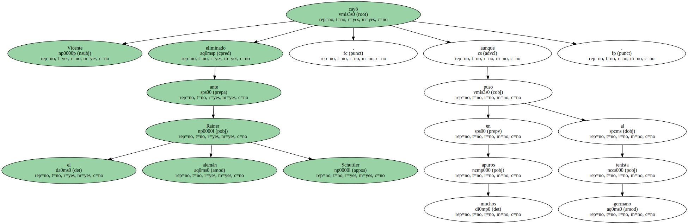
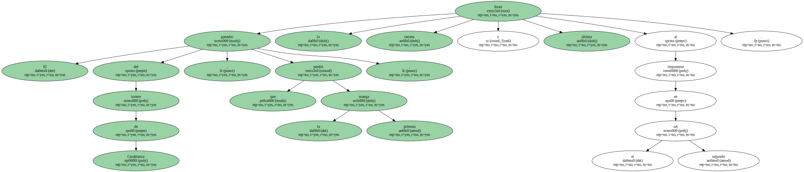
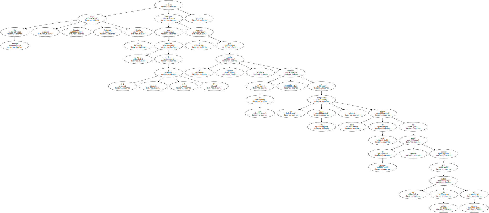
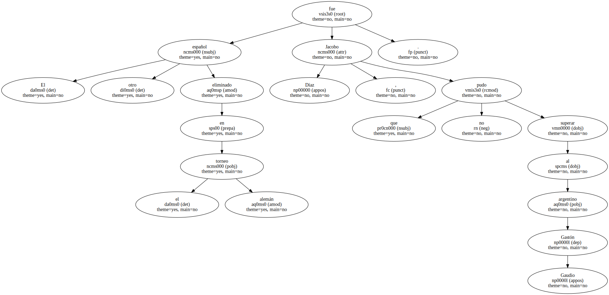
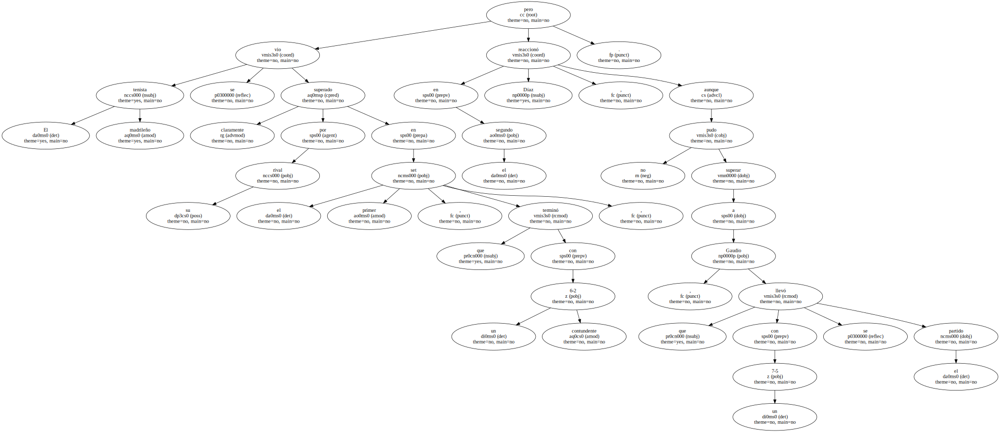
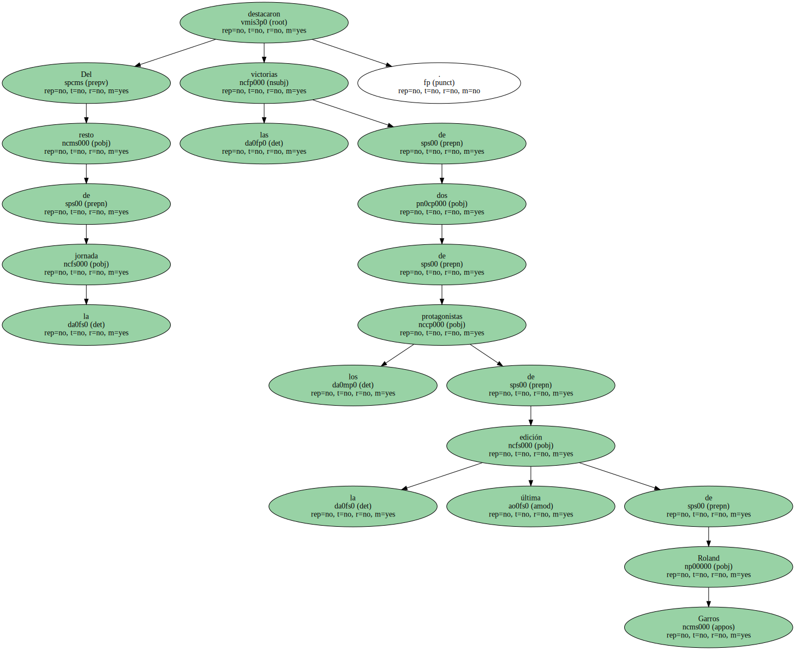
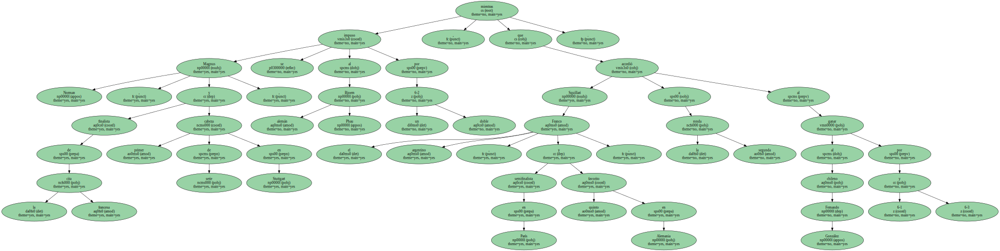

Las derrotas de Fernando Vicente y Jacobo Díaz en los partidos de primera ronda del torneo de Stuttgart disputados hoy , sumadas a la eliminación de Francisco Clavet en la jornada anterior , han dejado a la competición sin representantes españoles.

Vicente cayó eliminado ante el alemán Rainer Schuttler , aunque puso en muchos apuros al tenista germano.
El ganador del torneo de Casablanca , que perdió la primera manga , forzó la tercera y última al imponerse en el segundo set.
Sin embargo , Schuttler logró finalmente la victoria y con un resultado de 6-4 , 4-6 y 6-3 consiguió el pasaporte para la segunda ronda , en la que se enfrentará a su compatriota Tommy Haas , sexto cabeza de serie del torneo de Stuttgart , dotado con un millón de dólares en premios.
El otro español eliminado en el torneo alemán fue Jacobo Díaz , que no pudo superar al argentino Gastón Gaudio.
El tenista madrileño se vio claramente superado por su rival en el primer set , que terminó con un contundente 6-2 , pero en el segundo Díaz reaccionó , aunque no pudo superar a Gaudio , que con un 7-5 se llevó el partido.
Del resto de la jornada destacaron las victorias de dos de los protagonistas de la última edición de Roland Garros.
Magnus Norman , finalista de la cita francesa y primer cabeza de serie en Stuttgart , se impuso al alemán Bjoern Phau por un doble 6-2 , mientras que el argentino Franco Squillari , semifinalista en París y quinto favorito en Alemania , accedió a la segunda ronda al ganar al chileno Fernando González por 6-1 y 6-3.
